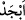
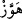
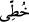
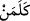
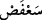

altı sene yaşadı. Annesi, kral Heredos’un korkusundan İsa’yı daha küçükken Şam’dan
Mısır’a götürdü. Çünkü yıldızı doğduğu için İran kralı onun doğacağını biliyordu.
İran kralı, İsa’ya altın, buhur ve mür bitkisinden hediyeler gönderdi. Elçiler
Heredos’un huzuruna girdiler, ona İsa’nın durumunu sordular. Heredos’un bundan haberi
yoktu. Onlar İsa’nın doğduğunu, peygamber olacağını ve getirdikleri hediyeleri ona
haber verdiler.
Heredos, onlara neden hediye olarak altın getirdiklerini sordu. Onlar da:
“Altın malların en kıymetlisi, İsa da zamanının efendisi olduğu için.” dediler.
Heredos onlara, mürrü niçin hediye ettiklerini sordu. Onlar,
“Çünkü İsa, hastaları ve kırıkları tedâvî eder.” dediler. Tekrar kral onlara, niye buhur
hediye ettiklerini sorunca da:
“Çünkü onun dumanı göğe doğru yükselir, yine o göğe yükselecek.” dediler. Bunun
üzerine Heredos korktu ve onlara şöyle dedi:
“Onun yerini biliyorsanız bana da söyleyin sizin onu arzuladığınız kadar ben de
arzuluyorum.”
Fars kralının elçileri İsa’yı bulup hediyeleri Meryem’e verdiler ve Heredos’un yanına
dönmek istediler.
Allah da onlara bir melek gönderdi ve melek onlara Heredos’un İsa’yı öldüreceğini
haber verdi. Onlar da Heredos’a uğramadılar.
Allah Teâlâ Meryem’e, beraberinde Yakub’un oğlu marangoz Yusuf olduğu halde
Mısır’a gitmesini emretti. O da İsa ile birlikte Mısır’a yerleşti. İsa, on iki yaşına
gelince Heredos öldü, Meryem de Şam’a geri döndü.
Rivayete göre Meryem, İsa’yı bir hocaya teslim etti. Hoca ona “Ebced”i öğretti. İsa
hocaya “ Ebced’in ne olduğunu biliyor musun?” diye sordu. Hoca bilmediğini
söyleyince, İsa (a.s.) hocaya şöyle dedi:
“Elif”, Allâh’ın nimetleridir, “be” Allâh’ın bahâsı (cemali, güzelliği), “cim” Allâh’ın
celâli, “dal” ise Allâh’ın dîni demektir.
Bunun üzerine hoca: “Güzel söyledin. Peki “ ’in anlamı nedir?” deyince İsa (a.s.):
“Hâ” kendisinden başka ilâh olmayan Allah, “vav” yalancılara yazıklar olsun, “ze”
cehennem zebânileri kafirler için hazırlandı, demektir.” dedi.
Hoca: “Güzel. Peki “” ne demektir?” deyince İsa:
“Ha”, günahkarların günahlarını azaltmak, “Tı” tûbâ ağacı, “yâ” Allâh’ın (kudret) eli
mahlukatı üzerindedir, demektir.” dedi.
Hoca: “Güzel. Peki ‘ ’ ne demektir?” deyince İsa:
“Kâf” Allâh’ın kelamı, “lâm” cennet ehlinin birbirine kavuşması, “mim” Allâh’ın
mülkü, “nûn” ise Allâh’ın nurudur.” dedi.
Hoca: “Güzel. Peki “” ne demektir?” deyince, İsa:
“Sin”, Allâh’ın yüceliği, “ayn” Allâh’ın ilmi, “fe” Allâh’ın mahlûkât hakkındaki fiili,
“sâd” Allâh’ın sıdkı, sözlerindeki doğruluğu demektir.” dedi.